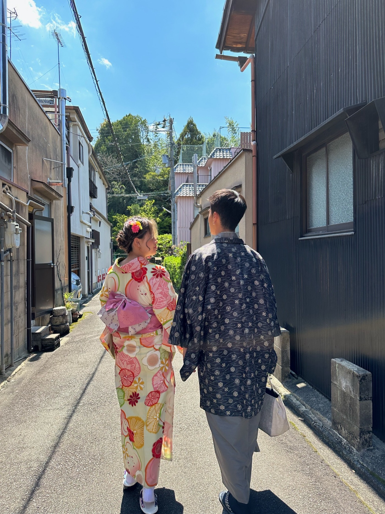
A group trip timed — half by luck — to mankai, the few days when the sakura hit full bloom. We ran Tokyo hard for five days, took the bullet train south past a snow-capped Fuji, ate our way through Osaka, and finished in Kyoto in rented kimono. This one leans more lifestyle than landmark: the cafés, the shopping streets, and the strawberry stands mattered as much as the temples.
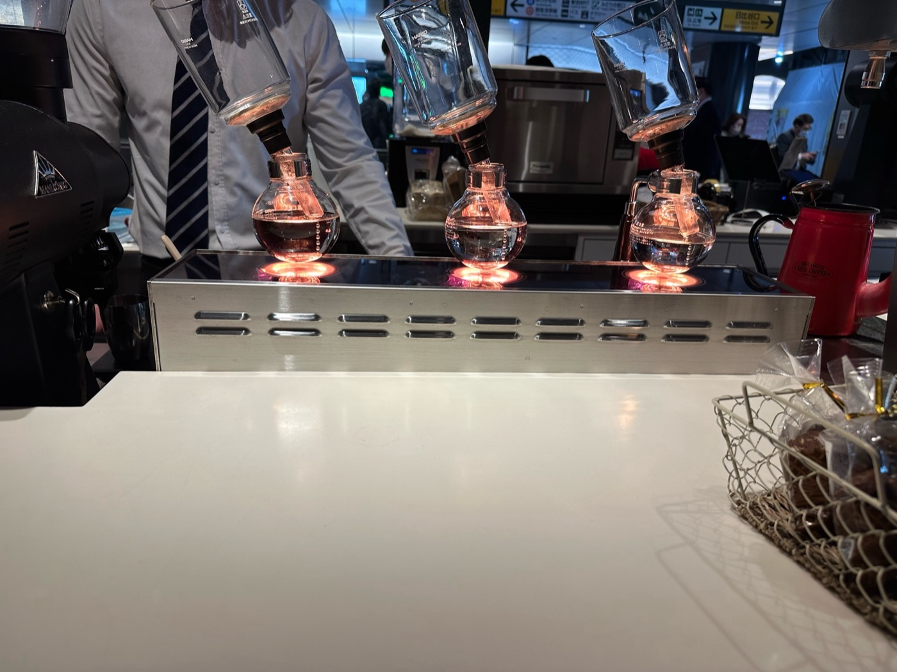
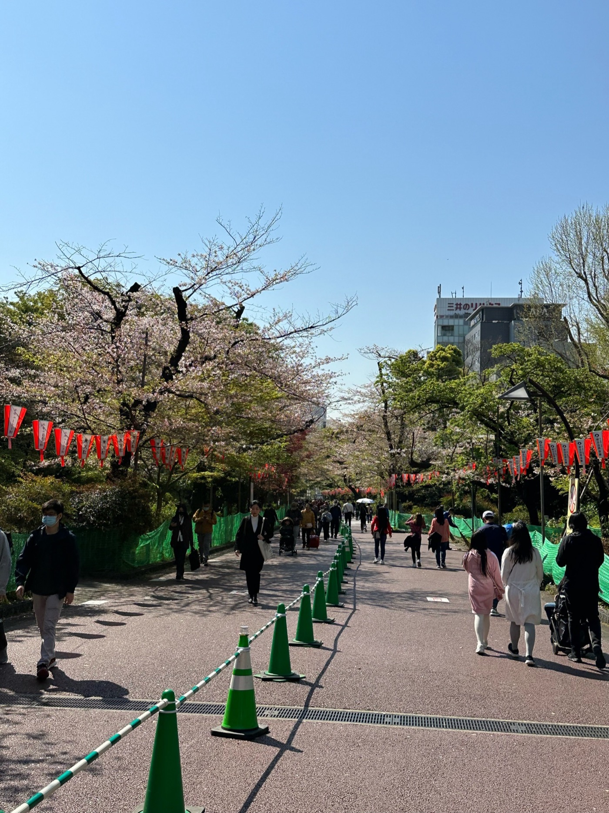
In from Narita, bags down, and out to Ueno Park — the sakura were at full bloom and the avenue under the Ueno Daibutsu was a tunnel of pink. Siphon coffee to fight the jet lag, then straight into hanami crowds.
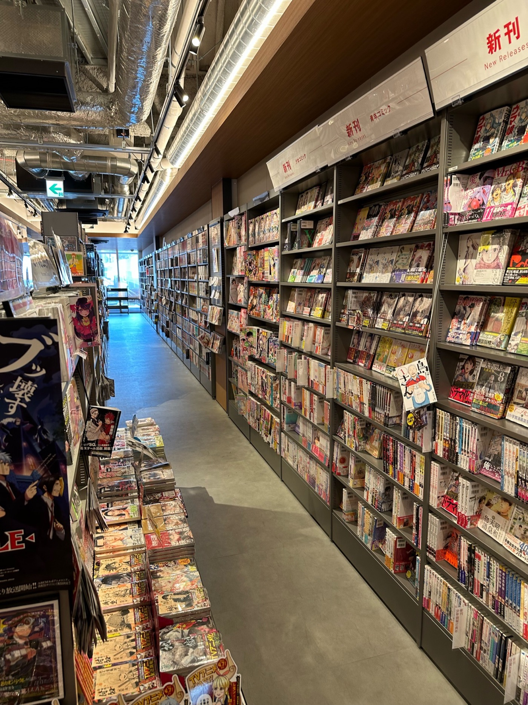
The afternoon went the way the best Tokyo afternoons do — getting lost in a wall-to-wall manga floor, then vintage and fashion shopping in the western neighborhoods, blossom trees turning up over every other side street.
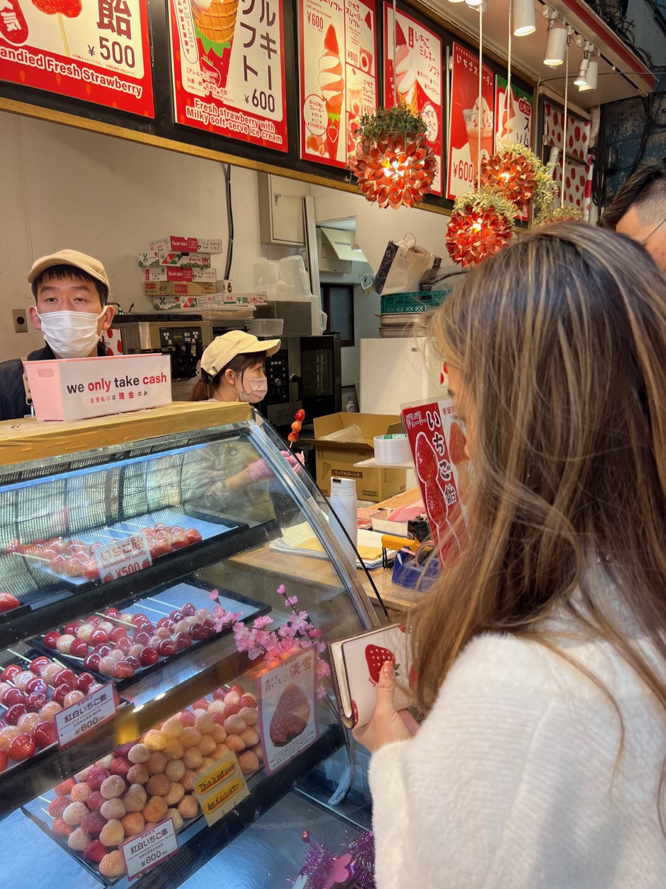
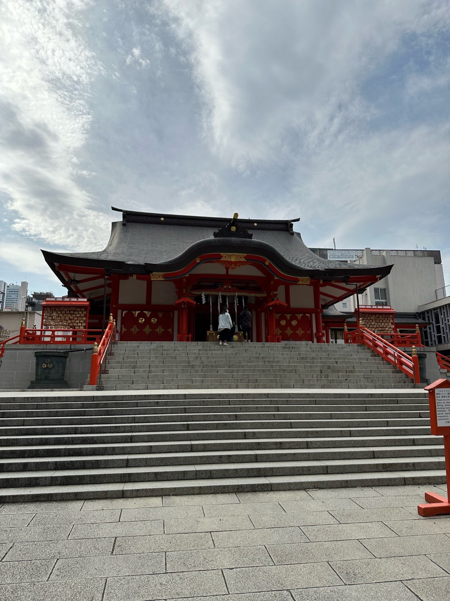
A cash-only stand selling amaou strawberry daifuku and candied-strawberry skewers, then the vermilion calm of Hanazono Shrine tucked a block off the Shinjuku neon — one of those Tokyo contrasts that never gets old.
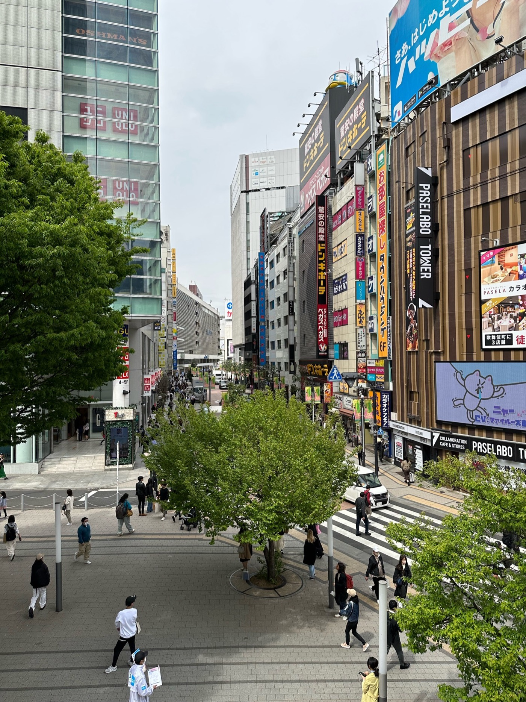
Down through Shinjuku's billboard canyons and on to a long Shibuya evening — the densest, loudest, most fun stretch of the city.
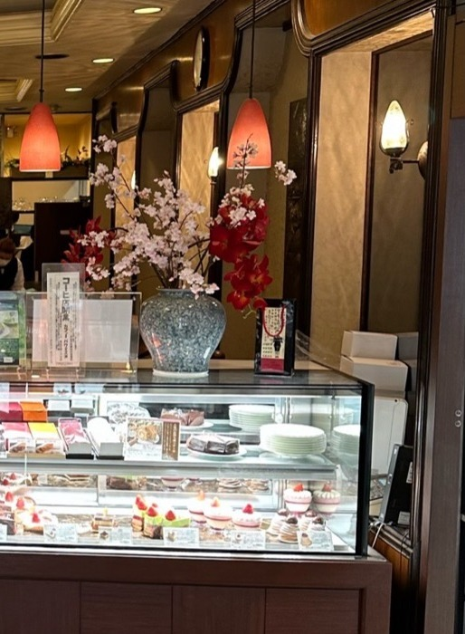
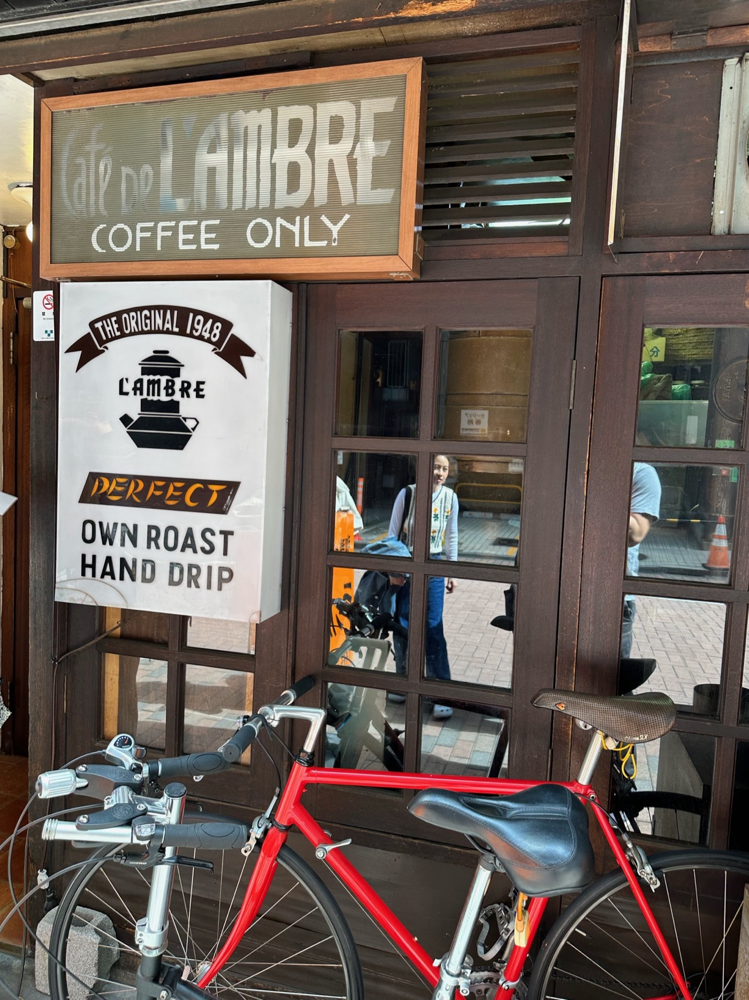
A morning of kissaten — Shōwa-era coffee houses with chandeliers and glass cake cases — capped by a pilgrimage to Café de L'Ambre, the legendary "coffee only" roaster that has hand-dripped its own beans in Ginza since 1948.
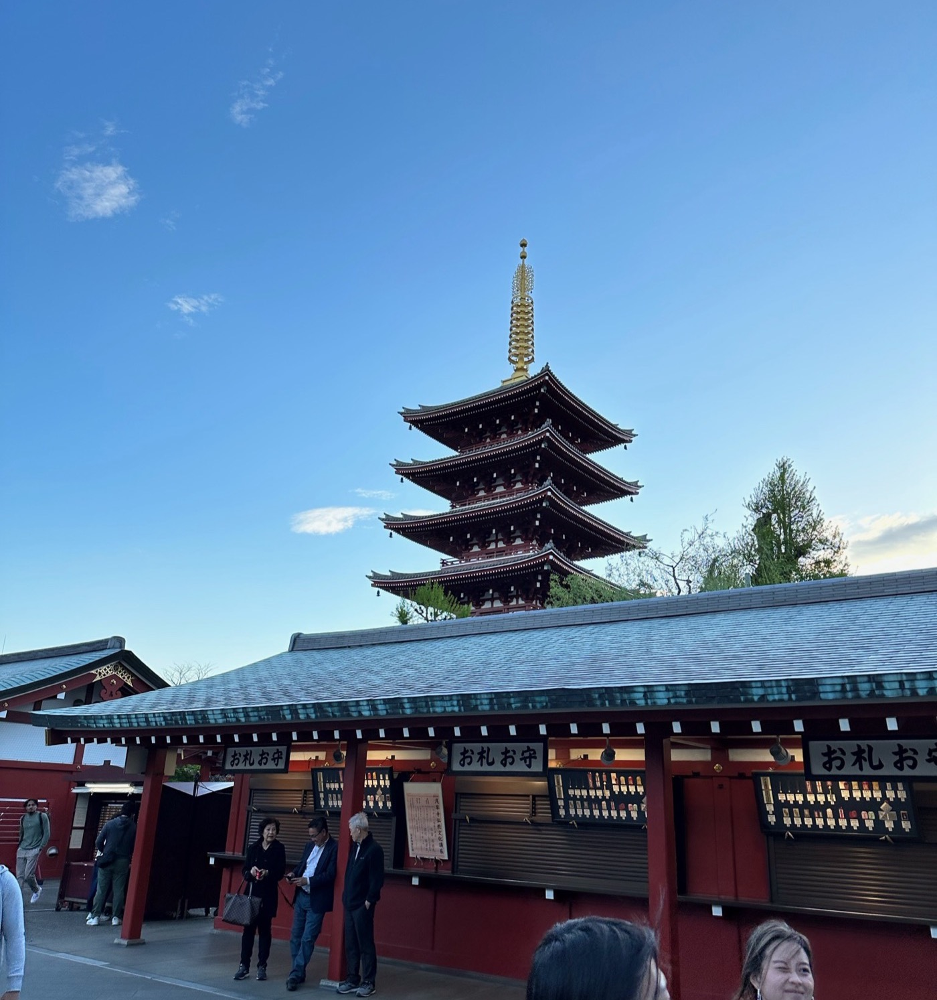
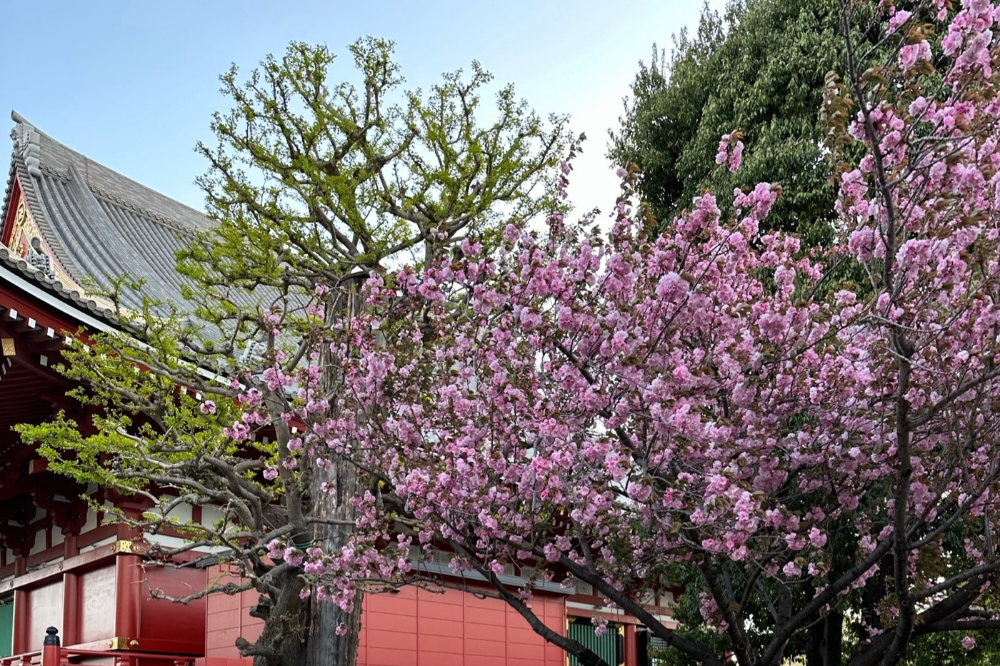
Golden hour at Sensō-ji — the five-story pagoda glowing against a clear sky, late double-blossom sakura still out by the red hall — then the opposite end of the Tokyo spectrum: a multi-floor game center, the obligatory Sega racing cabinets, and far too many credits.
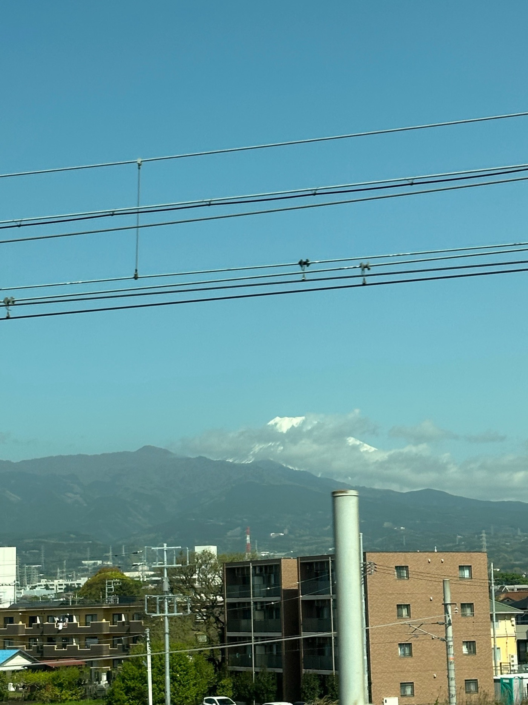
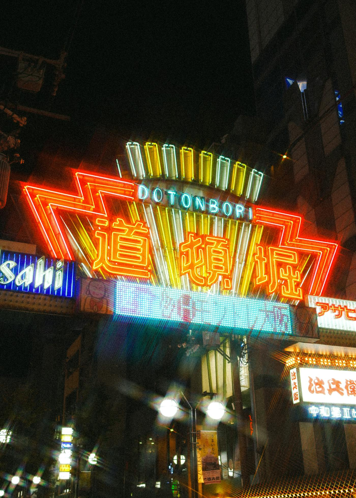
The Shinkansen ran us south and right on cue Mt. Fuji appeared, snow still on the cap, framed for about ten seconds before the next ridgeline swallowed it. By dark we were deep in Minami — Osaka's neon south around Shinsaibashi and Dōtonbori, yellow taxis, street food, and a completely different energy from Tokyo.
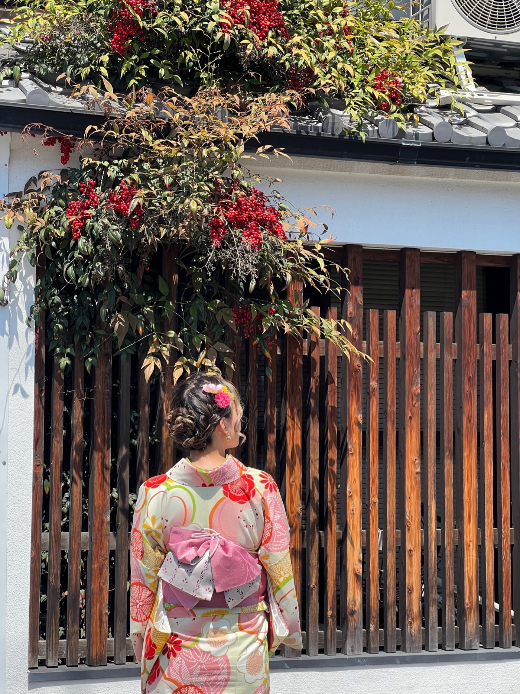
We rented kimono and spent the day climbing the Higashiyama lanes toward Kiyomizu-dera — wooden machiya, sloped stone alleys, and the slow, deliberate pace the whole outfit forces on you. The right way to end a Japan trip.